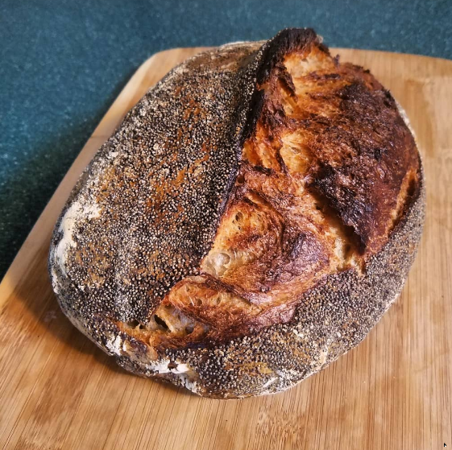

Return to homepage
Poppyseed Sourdough Bread

Image: @breaddeadredemption - Poppy Seed Encrusted Sourdough
Description
This is a relatively easy sourdough recipe that I showcase on my Instagram account, @breaddeadredemption
Ingredients
- 150g 100% hydration dark rye and whole wheat sourdough starter
- 296g strong bread flour like ABC+
- 96g medium coarseness high-protein whole wheat flour
- 290g water (25g reserved)
- 12g fine sea salt
- 10g poppyseeds (optional)
Directions
- In a medium-large mixing bowl, combine the flour and 265g of water. Mix until fully incorporated. Allow to autolyse (rest and hydrate) for 10-15 minutes.
- Add the sourdough starter to the autolyse dough. I like to push my fingertips through the starter and into the dough to help incorporate it.
- Begin stretching the dough from under one side, folding it over on itself, and rotating it 90 degrees. Ensure that the flour is thoroughly hydrated and no dry spots remain
- Repeat the folding process for at least eight folds, rubbing any dry spots you encounter between your fingers to hydrate them.
- Cover the dough with a damp dishcloth and allow it to rest for 30-45 minutes, depending on your kitchen temperature.
- Dissolve the salt in the reserved water and add it to your dough.
- Repeat steps 3-5 up to four more times, until your dough is very elastic, smooth, and bouncy when poked.
- If using poppyseeds, spread a thin layer of water on the counter rather than flour. Otherwise, turn the dough out onto a lightly floured counter.
- Fold the sides over the center, followed by folding the far edge all the way over to underneath the dough on the near side. The resulting dough should be a tight little loaf shape.
- Dust the top of your shaped loaf with flour and place it upside-down in a lined or floured banneton.
- Allow the dough to prove on the counter for at least two hours, up to eight hours. This depends on your kitchen temperature.
- For cooler kitchens, simply leave your loaf on the counter until it is fully risen (at least 6 hours) then bake.
- For warmer kitchens, transfer to the fridge overnight after the inital two-ish hour counter proof.
- Once you believe your dough is proved (at least 1.5x increase in volume), place it on the counter and allow it to warm up for at least an hour and a half.
- Place an unfinished cast iron dutch oven in your oven and preheat it at the maximum setting (usually 500-550F)
- A properly proved loaf of bread that has been allowed to warm can be subjected to the 'poke test'. Poking the bread should create a dimple that springs back halfway.
- If the bread is properly proved, cut a piece of parchment paper and turn the loaf out onto it.
- Score the loaf across the top using a razor blade held at a 45 degree angle to the loaf surface.
- Remove the dutch oven from your oven and place it on the stove. Load the bread into it by holding the parchment.
- Pour 1/2 cup of water between the parchment and the oven bottom and quickly shut the lid. Return the dutch oven back to your oven.
- Bake at 500F for 35 minutes, then remove the dutch oven lid and bake at 450F for an additional 25 minutes or until deeply browned.
- Turn off the oven, remove the loaf from the dutch oven, and place it directly on your oven rack. Allow the loaf to fully cool down inside the oven with the door ajar.